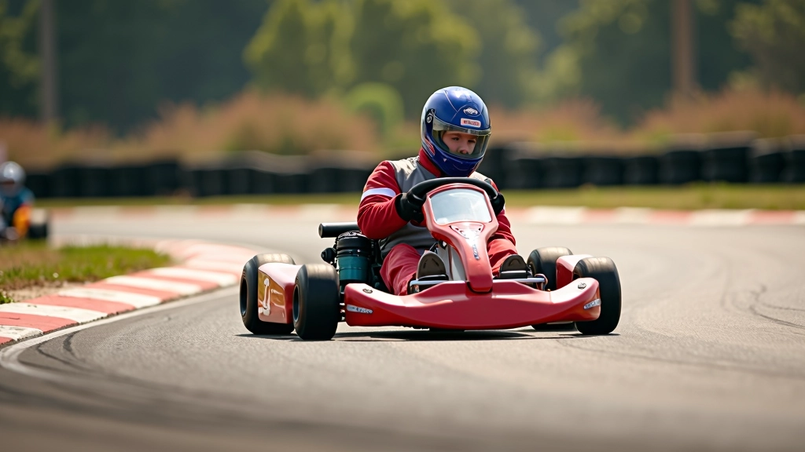
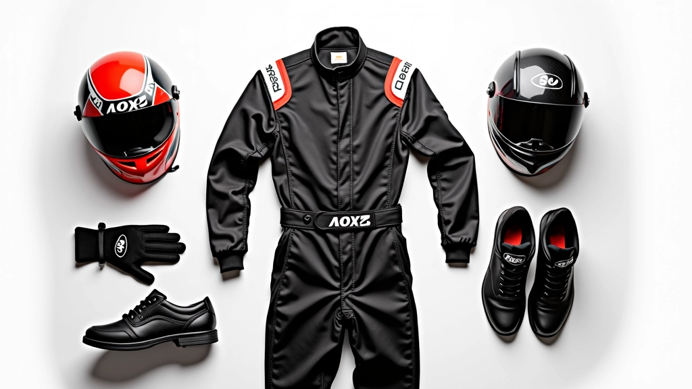

دليل البدء في سباقات الكارتينج الاحترافية
تعرّف على أساسيات القيادة الآمنة والتقنيات الصحيحة للمتسابقين الجدد في عالم سباقات الكارتينج

لماذا يجب أن تبدأ بشكل صحيح؟
الأسابيع الأولى من التدريب هي الأساس الذي يبني عليه مستقبلك في سباقات الكارتينج. إذا تعلمت التقنيات الصحيحة من البداية، فستوفر على نفسك سنوات من محاولة تصحيح العادات السيئة.
هذا الدليل يغطي كل شيء تحتاج إلى معرفته: من كيفية الجلوس في السيارة بشكل صحيح إلى فهم ديناميكيات المسار. نحن نركز على الأساسيات التي يمكنك تطبيقها مباشرة في جلستك الأولى.
السلامة أولاً
معايير السلامة والمعدات الضرورية قبل دخول المسار
التقنية الأساسية
مبادئ القيادة والتحكم بالسيارة على المسار
التطور المنتظم
كيفية قياس تقدمك وتحسين أدائك بشكل مستمر
الإعداد الأساسي والجلوس الصحيح
قبل أن تضغط على دواسة الوقود، يجب أن تكون في وضعية صحيحة. هذا ليس مسألة راحة فحسب — إنها تؤثر مباشرة على التحكم والسرعة.
الجلوس القريب جداً من المقود يحد من حركتك. الجلوس البعيد جداً يعني أنك لن تتمكن من الاستجابة السريعة للمنعطفات. يجب أن تتمكن من الوصول إلى دواسات التسريع والفرامل براحة تامة، مع الحفاظ على تحكم كامل بالمقود.
ضبط ارتفاع المقعد بحيث تكون فخذاك متوازيين مع أرضية السيارة
الإمساك بالمقود بكلتا يديك في موضع الساعة 9 و3
التأكد من أن قدماك تصل للدواسات دون الحاجة للمد الشديد

التعامل مع المنعطفات والتسارع
السرعة تأتي من المهارة، وليس فقط من الضغط على الدواسة. المتسابقون الجدد غالباً ما يرتكبون خطأ الدخول للمنعطفات بسرعة عالية جداً ثم محاولة الفرملة بقوة. هذا يؤدي إلى فقدان التحكم والانزلاق.
الطريقة الصحيحة هي البداية بسرعة أقل، والتعود على الشعور بالسيارة أولاً. كل مسار له خصائصه الخاصة — الالتصاق والاحتكاك يختلفان من مسار لآخر. خذ وقتك في الأسابيع الأولى لفهم كيف تستجيب السيارة.
المعدات الضرورية والسلامة
الخوذة والقفازات ليست مجرد إكسسوارات — هي حمايتك الأولى. معظم المسارات المحترفة لديها معايير صارمة للمعدات، وهناك سبب لذلك.
خوذة جيدة يجب أن تكون معتمدة (شهادة ECE أو FIA)، وأن تناسب رأسك بشكل محكم. القفازات تساعدك على الإمساك الأفضل بالمقود وتحمي يديك من الحرارة. بدلة السباق تحمي جسدك من الاحتكاك والحرارة.
الخوذة
معتمدة بشكل صحيح وتناسب آمنة
القفازات
قفازات سباق متخصصة بقبضة جيدة
بدلة السباق
مادة مقاومة للحريق ومريحة للحركة
الأحذية
أحذية رياضية مسطحة بحساسية جيدة

التدريب والتطور المستمر
أول 4-6 أسابيع من التدريب المنتظم ستحدث فرقاً ملحوظاً. الاتساق أهم من الشدة — جلسة واحدة في الأسبوع أفضل من محاولة فعل كل شيء في يوم واحد.
ركز على إتقان أساسيات واحدة في كل مرة. في الأسبوع الأول، انتبه فقط للموضع والتحكم الأساسي. في الأسبوع الثاني، أضف التركيز على الفرملة والتسارع. هذا النهج التدريجي يبني أساساً قوياً.
الإحماء والموضع الصحيح
التحكم بالمنعطفات والسرعة
بناء الثقة والسرعة
ابدأ رحلتك الآن
سباقات الكارتينج ليست فقط عن السرعة — إنها عن التحكم والمهارة والجرأة. كل متسابق احترافي بدأ كمبتدئ، وكل واحد منهم تعلم من الأخطاء والتدريب المستمر.
الخطوة الأولى هي الأهم. إذا كنت مستعداً لبدء هذه الرحلة، فاختر مسار قريب من موقعك واحجز جلستك الأولى. المسارات الجيدة لديها مدربون يمكنهم مساعدتك في فهم الأساسيات وتصحيح تقنيتك من البداية.
تذكر: ستشعر بالإحباط أحياناً، وستقع بعض المرات (حرفياً!)، لكن التقدم يأتي مع الصبر والممارسة. كل دورة على المسار تعلمك شيئاً جديداً. فقط ركز على التحسن المستمر بدلاً من مقارنة نفسك بالآخرين.
هل أنت مستعد للبدء؟
تعرف على برامج العضوية والفعاليات المتاحة في مسارات الكارتينج بالقرب منك
استكشف البرامجإشعار هام
المعلومات الواردة في هذا الدليل هي لأغراض تعليمية عامة فقط. كل مسار كارتينج قد يكون له قواعد وأنظمة سلامة مختلفة. يجب عليك دائماً اتباع التعليمات المحددة من قبل المسار والمدربين المحترفين قبل بدء أي نشاط سباق. سباقات الكارتينج تنطوي على مخاطر، وارتداء المعدات الواقية المناسبة ضروري في جميع الأوقات.

فريق تحرير سرعة الحلبة
فريق التحرير والمراجعة
كتبه فريق تحرير سرعة الحلبة، متخصصون في تقديم معلومات دقيقة وسهلة الفهم عن دوري الكارتينج والعضويات.
مقالات ذات صلة

اختيار المعدات المناسبة للسباق
دليل شامل لاختيار الخوذة والقفازات والملابس المناسبة لسباقات الكارتينج الآمنة والفعالة
اقرأ المزيد
برامج العضوية والامتيازات
تعرّف على الخطط المختلفة والمميزات الحصرية المتاحة للأعضاء المنتظمين والمتسابقين
اقرأ المزيد
البطولات والفعاليات الموسمية
اكتشف البطولات المثيرة والفعاليات الموسمية والفرص للتنافس مع متسابقين من مستويات مختلفة
اقرأ المزيد